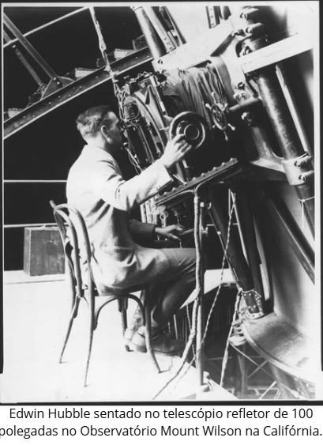

1920
No fim da década de 1920, o astrônomo Edwin Hubble demonstrou que o universo está em expansão ao observar o afastamento das galáxias, evidenciado pelo desvio para o vermelho da luz que elas emitem. Essa descoberta, baseada no trabalho de Henrietta Swan Leavitt para determinar distâncias galácticas, indicou que a Via Láctea não era o único universo, mas sim uma entre muitas galáxias, e impulsionou a teoria do Big Bang, sugerindo um início para o cosmos a partir de uma expansão contínua.
1923
Alemão étnico da Transilvânia, Hermann Julius Oberth chegou aos seus conhecimentos sobre voos espaciais antes da Primeira Guerra Mundial. Em 1923, ele publicou o livro " O Foguete no Espaço Interplanetário". Nele, ele discutiu a viabilidade dos voos espaciais tripulados, expôs as equações básicas da ciência dos foguetes e descreveu como os propelentes líquidos poderiam exceder em muito o desempenho dos foguetes de pólvora.
1926
Robert Goddard lançou o primeiro foguete do mundo movido a combustível líquido em 16 de março de 1926, em Auburn, Massachusetts. O foguete de Goddard alcançou 12,5 metros de altura, demonstrando o potencial dos combustíveis líquidos para a exploração espacial futura e sendo um marco fundamental na história da engenharia de foguetes
"É difícil dizer o que é impossível, pois o sonho de ontem é a esperança de hoje e a realidade de amanhã."
-Robert H. Goddard.


